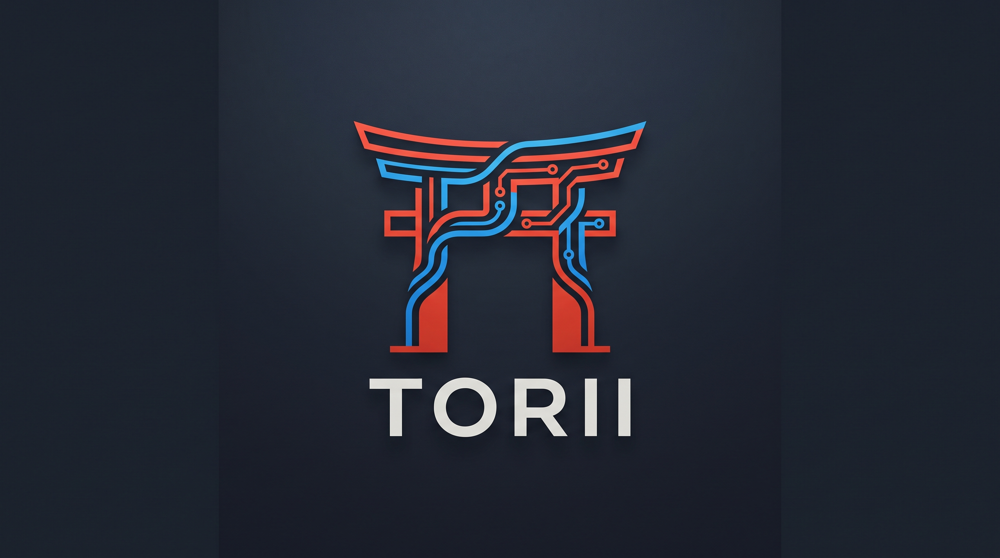

Demonstrator lokalny / wrzesień 2026
Torii
Dane, transformacje i eksperymenty w jednym interfejsie.
Jak działa aplikacja, co przechowuje i które moduły odpowiadają za wynik.
Działający koncept do ręcznych testów.
Jedna osoba, dane niesensytywne, bez wdrożenia produkcyjnego.

Przepływ użytkownika
Praca w aplikacji
Projekt
Grupuje dane, definicje i wyniki jednego zadania.
Dane
Import CSV albo próbka syntetyczna. Podgląd, profil kolumn i wersja.
Transformacja
Zapis reguły i osobne wykonanie. Wynik otrzymuje własny obiekt danych.
Model
Wybór cech, celu i algorytmu: Ridge albo średnia jako baseline.
Eksperyment
Trening na konkretnej wersji danych i modelu. Rzeczywisty zapis MLflow.
Analiza
Porównanie metryk, predykcje i współczynniki. Pobranie modelu lub raportu.
Wyniki pozostają na dysku po odświeżeniu strony i restarcie aplikacji.
Model danych Torii
Obiekty, wersje i wykonania
Obiekt określa, czym coś jest. Wersja utrwala jego stan. Wykonanie zapisuje, co z tym stanem zrobiliśmy.
Definicja + hash
Referencje do źródła i transformacji
+ Model M / v1
Status i wynik
Demo pozwala dopisać kolejną wersję datasetu. Nową konfigurację modelu lub transformacji zapisujemy jako nowy obiekt. Nie ma jeszcze ogólnego edytora wersji wszystkich typów.
Runtime
Architektura działającego demo
Interfejs
apps/web/src/demoHTTP na tym samym originie127.0.0.1:18440/demo-api/*
Koordynacja
app.pyWalidacja, pliki UI, katalog i uruchamianie treningu
store.py i data.pySnapshoty, wersje, CSV i transformacje
Obliczenia i trwałość
worker.pyscikit-learn + klient MLflow
torii.sqlite dla katalogu i danychmlflow.sqlite dla trackinguruns/ dla artefaktówDemo nie potrzebuje Dockera, PostgreSQL, MinIO ani osobnego serwera MLflow. Subprocess oddziela obliczenia, ale nie stanowi sandboxa bezpieczeństwa.
Od żądania do wyniku
Przebieg treningu
- 1. Utrwalenie wejściaAPI wybiera wersję modelu i datasetu. Zapisuje run i wewnętrzny
job.json. - 2. ObliczeniaWorker dzieli dane na train/test. Dopasowuje preprocessing tylko na części treningowej.
- 3. Tracking i artefaktyMLflow zapisuje parametry, metryki i pliki. API tworzy referencję analizy i publikuje wynik.
Ridge: uzupełnienie braków medianą, standaryzacja i regresja liniowa z regularyzacją.
Baseline: stała predykcja równa średniej celu ze zbioru treningowego.
Statusy: queued, running, succeeded lub failed. Jeden trening naraz, limit 120 s. Awaria trackingu oznacza brak sukcesu.
Podział odpowiedzialności
Torii i MLflow
Torii zarządza kontekstem
- Projekty i katalog obiektów
- Wersje danych i definicje transformacji
- Powiązania wejść, modelu, wykonania i analizy
- Formularze, podgląd i porównanie w jednym GUI
MLflow zapisuje eksperyment
- ID runu oraz parametry treningu
- MAE, RMSE i R²
- Model, raport i opis środowiska
- Lokalny tracking SQLite i pliki artefaktów
Wszystkie runy demo trafiają do lokalnego eksperymentu „Torii local demo”. Torii zachowuje swój podział na projekty. Demo nie uruchamia osobnego MLflow UI ani procesu zatwierdzania modeli w Model Registry.
Budowanie a działanie
Zależności techniczne
| Warstwa | Narzędzia | Po co są potrzebne |
|---|---|---|
| Start i pakiety | PowerShell, uv, Python 3.12 | Launcher, izolowane środowisko .venv, zamrożony uv.lock |
| Build interfejsu | Node ≥24.15 i <25, npm 11, Vite, TypeScript | Kompilacja React do statycznych plików. Po buildzie UI serwuje FastAPI |
| API | FastAPI, Pydantic, Uvicorn | HTTP, walidacja kontraktów i lokalny serwer |
| Trening | scikit-learn, NumPy, joblib | Pipeline, podział danych, metryki i zapis dopasowanego modelu |
| Tracking | mlflow-skinny, SQLAlchemy, Alembic | Klient eksperymentów i obsługa lokalnej bazy trackingu |
| Magazyn Torii | SQLite z biblioteki standardowej Pythona | Metadane i snapshoty datasetów |
Pełne wersje bibliotek: apps/demo/uv.lock i apps/web/package-lock.json. Pierwsza instalacja wymaga dostępu do rejestrów pakietów. Ta prezentacja nie pobiera niczego z sieci.
Granice przechowywania
Co trafia do Git, a co zostaje lokalnie
Jedno repozytorium, osobne moduły
apps/demoPython: API, Store, dane i workerapps/web/src/demoReact: widoki i klient API demoscripts/demo.ps1Start, status i kontrolowane zatrzymaniespecs,adr,docsKontrakty, decyzje i instrukcje
Osobny magazyn wyników
apps/demo/.local/data/
torii-demo-v1
torii.sqlite
mlflow.sqlite
runs/
<run-id>/
mlflow-artifacts/.local i .venv są ignorowane przez Git. Push kodu nie wysyła projektów demo, wierszy danych ani wytrenowanych modeli.
Eksport manifestu daje definicje, referencje, hashe i metryki. Nie jest pełną kopią zapasową ani automatycznym pakietem odtworzeniowym. Sprawdź manifest przed ręcznym dodaniem do Git.
Zapisany odbiór lokalny
Porównanie na tych samych danych
160 wierszy syntetycznych. Usunięcie braków daje 155 wierszy, z czego 116 służy do treningu i 39 do testu.
| Model | MAE | RMSE | R² |
|---|---|---|---|
| Ridge, alpha 1 | 0,6498 | 0,7963 | 0,9986 |
| Średnia train | 17,5200 | 21,7702 | −0,0718 |
Niższe MAE i RMSE oznaczają mniejszy błąd na tym samym zbiorze testowym.
Ridge pasuje do zadanej zależności liniowej. Ten wynik nie dowodzi jakości na rzeczywistych danych biznesowych.
Współczynniki dotyczą cech po standaryzacji. Nie dowodzą przyczynowości i nie zastępują pełnego XAI.
Źródło: SPEC-0018, dowody odbioru
Scenariusz demonstracji
Pokaz w dziesięć minut
Uruchomienie z katalogu Torii
.\scripts\demo.ps1
.\scripts\demo.ps1 -Action StatusJeśli istnieje projekt „Torii — prezentacja”, można zacząć od jego wyników. Nowy klon repozytorium nie zawiera lokalnych projektów.
CSV: UTF-8, separator przecinek, maks. 5 MiB w GUI, 5000 wierszy i 50 kolumn. Trening wymaga co najmniej 20 wierszy i liczbowego celu bez braków.
- 1. Dane i pochodzenieNowy projekt, próbka syntetyczna, podgląd i profil.
- 2. PrzetwarzanieTransformacja „Usuń braki”. Osobny wynik, źródło bez zmian.
- 3. Model i porównanieCel
target, cechyx1/x2/x3. Ridge i baseline na tej samej wersji. - 4. Wynik i trwałośćMetryki, MLflow ID, model, eksport. Odświeżenie strony zachowuje wyniki.
Zakres i ograniczenia
Trzy odrębne części projektu
| Obszar | Stan | Rola i zależności |
|---|---|---|
| Demo konceptu | Działa lokalnie | React, FastAPI, SQLite, scikit-learn, MLflow. Jedna osoba, bez SSO |
| Fundament enterprise | W realizacji | Osobne apps/api, główne UI, PostgreSQL, Keycloak i Caddy. Integracja OIDC i usług projektowych nie jest ukończona |
| Warsztat legacy | Osobna istniejąca ścieżka | Jupyter/code-server, AutoGluon, MLflow, PostgreSQL, MinIO, DataHub. Własne Compose i wolumeny |
Demo nie łączy tych magazynów i nie migruje starszej instalacji.
Odłożone w nowym GUI: Parquet, konektory SQL, Jupyter, własny kod Python, modele regułowe, klasyfikacja, AutoML tuning, konta, pełne XAI i wdrożenia produkcyjne. Baseline średniej nie zastępuje obsługi dowolnych modeli nie-ML.
Kolejne decyzje po testach
Dalszy rozwój i instrukcje
Zależności przyszłych prac
- WspółdzielenieWymaga tożsamości, uprawnień do projektów, audytu i centralnego magazynu.
- Nowe źródła i modeleWymagają kontraktów adapterów, obsługi sekretów oraz kontrolowanego wykonywania kodu.
- Produkcja i odtwarzanieWymagają kompletnych wejść, środowisk, wydań, zatwierdzeń i sprawdzonego odzyskiwania.
Materiały do pracy
- Pierwsze uruchomienie i ręczny test
- Eksploatacja, diagnostyka i poprawki
- Moduły i zależności w kodzie
- Docelowy plan platformy
- README repozytorium
Najbliższy krok: ocena przepływu pracy przez użytkownika i lista konkretnych poprawek. Plan enterprise pozostaje otwarty.